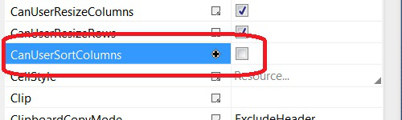

Вы можете сделать это, добавив System.ComponentModel имен, как это:
xmlns:scm="clr-namespace:System.ComponentModel;assembly=WindowsBase"
затем внутри CollectionViewSource XAML добавить новые SortDescriptions так:
<CollectionViewSource … >
<CollectionViewSource.SortDescriptions>
<scm:SortDescription PropertyName="Column1"/>
<scm:SortDescription PropertyName="Column2"/>
</CollectionViewSource.SortDescriptions>
</CollectionViewSource>
это будет сортировать данные по столбцу1, столбцу2.
Edit:
также делает это с помощью C# код позади довольно легко:
private void btnSort_Click(object sender, RoutedEventArgs e)
{
System.Windows.Data.CollectionViewSource myViewSource = ((System.Windows.Data.CollectionViewSource)(this.FindResource("The_ViewSource_Name")));
myViewSource.SortDescriptions.Add(new SortDescription("Column1", ListSortDirection.Ascending));
myViewSource.SortDescriptions.Add(new SortDescription("Column2", ListSortDirection.Ascending));
}
Edit2:
Обход может быть сделано, чтобы поймать столбец заголовка левой кнопкой мыши и предотвратите сортировку сетки в этом столбце следующим образом:
Отключить свойство сетки с именем CanUserSortColumns

Добавьте этот код в случае сетки PreviewMouseLeftButtonUp:
private void myDataGrid_PreviewMouseLeftButtonUp(object sender, MouseButtonEventArgs e)
{
DependencyObject dep = (DependencyObject)e.OriginalSource;
while ((dep != null) &&
!(dep is DataGridCell) &&
!(dep is DataGridColumnHeader))
{
dep = VisualTreeHelper.GetParent(dep);
}
if (dep == null)
return;
if (dep is DataGridColumnHeader)
{
DataGridColumnHeader columnHeader = dep as DataGridColumnHeader;
// check if this is the wanted column
if (columnHeader.Column.Header.ToString() == "The_Wanted_Column_Title")
{
System.Windows.Data.CollectionViewSource myViewSource = ((System.Windows.Data.CollectionViewSource)(this.FindResource("myViewSource")));
myViewSource.SortDescriptions.Clear();
myViewSource.SortDescriptions.Add(new SortDescription("Column1", ListSortDirection.Ascending));
myViewSource.SortDescriptions.Add(new SortDescription("Column2", ListSortDirection.Ascending));
}
else
{
//usort the grid on clicking on any other columns, or maybe do another sort combination
System.Windows.Data.CollectionViewSource myViewSource = ((System.Windows.Data.CollectionViewSource)(this.FindResource("myViewSource")));
myViewSource.SortDescriptions.Clear();
}
}
}
Вы можете изменить и развернуть этот код для достижения ваших требований.
Я надеюсь, что это поможет другим. Мое решение поддерживает функцию сортировки по умолчанию и позволяет сортировать по нескольким столбцам.
Поместите сортировочное событие на вашем DataGrid
<DataGrid x:Name="dataGridName" Sorting="dataGridName_Sorting">
И теперь в вашем коде позади
private void dataGridName_Sorting(object sender, DataGridSortingEventArgs e)
{
var dgSender = (DataGrid) sender;
var cView = CollectionViewSource.GetDefaultView(dgSender.ItemsSource);
//Alternate between ascending/descending if the same column is clicked
ListSortDirection direction = ListSortDirection.Ascending;
if (cView.SortDescriptions.FirstOrDefault().PropertyName == e.Column.SortMemberPath)
direction = cView.SortDescriptions.FirstOrDefault().Direction == ListSortDirection.Descending ? ListSortDirection.Ascending : ListSortDirection.Descending;
cView.SortDescriptions.Clear();
AddSortColumn((DataGrid)sender, e.Column.SortMemberPath, direction);
//To this point the default sort functionality is implemented
//Now check the wanted columns and add multiple sort
if (e.Column.SortMemberPath == "WantedColumn")
{
AddSortColumn((DataGrid)sender, "SecondColumn", direction);
}
e.Handled = true;
}
private void AddSortColumn(DataGrid sender, string sortColumn, ListSortDirection direction)
{
var cView = CollectionViewSource.GetDefaultView(sender.ItemsSource);
cView.SortDescriptions.Add(new SortDescription(sortColumn, direction));
//Add the sort arrow on the DataGridColumn
foreach (var col in sender.Columns.Where(x => x.SortMemberPath == sortColumn))
{
col.SortDirection = direction;
}
}
SortDirection на DataGridColumn позволяет показывать стрелку на сетке.